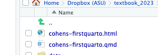

All of the work we do using R will be written using Quarto, the new implementation of what used to be called “R Markdown”.
In this chapter:
Create and use projects to hold all of your files in an organized way
Understand the structure of a Quarto document
Set the “front matter” or YAML for the page.
Add an image to your page
Insert your first code chunk and run some R code
Render your document - you can do it as often as you want to see drafts.
I suggest that, beginning with this chapter, you start collecting code examples that you can save in a document with a description of what they mean in your own words. This reference document can be anywhere – a Google Doc, a Quarto doc, or anywhere else. You won’t be running that code, but you’ll have something you can copy and paste that exemplifies how you think of it.
14.1 R projects
One of the things that trips up new users of R is that it’s hard to tell the program where to find things on your computer. The “working directory” can be confusing.
We’ll be working entirely in projects in this course. Projects keep everything needed together so that they can run on almost any machine.
Create a new project by hitting the second green + sign at the top left of your screen, or choose File -> New Project.
When prompted, create a new directory within your course folder called rlessons-011
new project
This creates a file with the extension .RProj in the folder you designate. From now on, you can open the project by double-clinking on that file, or by using the drop-down menu at the upper right of your RStudio screen.
To use Quarto, you must have it installed on your computer. One easy way to do that is to install the quarto and rmarkdown packages in R, which you did at the end of the last chapter. Do that now if you skipped that step.
Quarto is a document format that lets you combine your writing, images, computer code and its results into complete documents. We’ll only be using Quarto for R using RStudio, but it also works in other languages such as Python and Javascript. Once you know how to use it in one context, it will work in other contexts.
Creating documents with Quarto lets you ditch those tiresome data diaries.
Generally, you write your document around chunks of R code, which integrates your analysis with your writing. Some news organizations do much of their internal work using Quarto and its predecessor, RMarkdown.
Quarto is modern RMarkdown
Many help pages and tutorials in R use the format called “R Markdown” instead of Quarto. Quarto was introduced in mid-2022 as a replacement for RMarkdown, and it seems silly to learn something that is already out of date.
Quarto files end with the extension .qmd. RMarkdown end with the extension .Rmd. Both will work in RStudio, but the “Render” button becomes “Knit” in RMarkdown. The only substantive difference is in the part between the three dashes at the top.
14.2.1 The structure of a Quarto document
There are four parts to a Quarto document:
Narrative and document features using markdown, including headlines, subheads, images and other elements you’d normally see on a web page. You don’t have to write in HTML — Quarto writes it for you.
The “front matter”, or YAML, instructions for the entire document.
Code chunks – your R computer code. This is the part that would go inside the R Scripts that you learned about in the last chapter’s video.
The results of code chunks - what you get back when you execute the code, including charts, graphs, tables and maps.
Markdown, an editing language
Quarto is based on markdown3, which was invented as an easy way for early Wikepedia editors, who were used to text editors like Word, to write simple documents that would automatically be rendered into the more complicated HTML of the web.
Review the first five sections of the markdown basics instructions from Quarto, paying attention to:
We probably won’t use anything below the Tables section in this class.
Front matter / YAML at the top
The way the R knows how to process the page is by reading the very top of the file and looking at the section between three dashes. This is called “front matter”, and it’s extremely picky about indentations and the exact words you use.
The default setup is very basic. You can use options in this front matter to make it look a little more polished. Here is some code you can use instead of the default to make it look a little better, add a table of contents, and allow your readers to download the underlying code. It also embeds all of the images and data you use in your page in the final output so that you can share your html page through email without copying those external items.4
---title:"A title for your page"author:"Your name"format:html:theme: cosmosembed-resources:truetoc:truecode-tools:truepage-layout: fulldf-print: paged---
14.2.2 Including R code and its results
So far, nothing is different from a simple Google doc or Word document – there is no computer code or data involved. But the value of Quarto is that it allows you to mix your analysis with your writing in one place.
You’ll do that through code chunks – little snippets of working code that you insert within your narrative which, when processed, will also include the results.
To insert a code chunk:
Use the +C button on the top right of your screen. ( )
Use the keyboard shortcut CMD/CTL-OPT/ALT-i
The following code chunk creates a new variable called my_variable, another called my_name, then prints out the value stored in the my_name one. Copying it into your document will create a code chunk for you.
```{r}# A hashtag here means the line is a "comment". R will ignore it.. # Anything between ```{r} at the beginning and ``` at the end is the code chunk. # create two new variables heremy_variable <-13my_name <-"Sarah"#now print out the one called my_namemy_name# this is the end of the code chunk```
[1] "Sarah"
This might not seem like much, but think about how it helps you do your analysis. You can write all of your notes right where you do the work. You don’t have to copy and paste information from one place to another, or share out-of-date spreadsheets with your teammates.
14.2.3 Rendering a document
The document remains in markdown format until you render it. There are several ways to do that, most easily by pressing the “Render” button at the top of the page.
When that button is pushed, Quarto converts your document to an HTML document that can be shared or published. It will be listed as a new file in your project:

rendered files
Quarto starts from scratch
You may have worked in a document for a while and saved a bunch of items in your environment.
Quarto doesn’t care!
Every time it creates your document, it starts from a clean environment — everything you use must be created in the program itself, either by loading a package, importing some data, or doing some analysis. We’ll go through that later, but one good practice is to periodically clear your environment and run all of the code chunks from the top to make sure they don’t depend on anything else. You’ll do this in the walkthrough.
14.2.4 Source vs. Visual modes
RStudio lets you use what it calls “Visual” mode to hide the markdown code for you, and present you with a draft of what your document may look like. It also uses point-and-click methods to insert images and headings and other elements. For now, we should use the “Source” mode, which may not be the default for your machine. Later on it will be fine to switch back and forth, but the visual mode doesn’t work very well with the results of your commands so it’s worth understanding a little about what is going on behind the scenes.
Switching to Source mode
RStudio usually creates a Quarto document in “Visual” mode, which hides the underlying coding from you and allows you to use point-and-click menus to structure your document.
This tutorial will have you switch to “Source” mode so that you can see the underlying structure.
In practice, visual mode makes data tables look all squished and difficult to navigate until you’ve rendered them. This is something we do a lot, so I end up working in the source document pretty frequently.
You can set up RStudio to default to source mode by changing the global options under Tools -> Global Options , then look for R Markdown, and the Visual tab.
14.3 Walkthrough - your first document
Practice by creating a new document with three things about yourself in a list, a picture of an animal you love or some other image you like, and a code chunk.
Here are the steps:
Find an image of your favorite animal or another image you like, and save it in the project folder that you created above.
Open RStudio, and open the project through the verty top right corner of your screen or through the file menu
Create a new Quarto document.
Switch to Source mode from Visual mode .
Delete the entire default entry, including the front matter.
Copy the code above to the very top of the page. Don’t leave any blank lines above it.
Save the new Quarto document using the name yourlastname-firstquarto
The area below the three dashes is your document. In it, create:
A subhed introducing a subtopic, called “About me”
Within that heading, a list of three things about yourself or about a topic you love, in an unordered (bulleted) list.
Another subhed , called “An image I love”, with some text below it describing why you love it
The image that you saved into your project folder
Another subhed called “Some R code”
A code chunk, in which you create a variable , assign it a value, and then print it out.
Save your work
Render the document to a final html file. (Rendering automatically saves, but it’s good practice to do it yourself.)
14.3.1 Example document
You can look at the original Quarto code and the rendered document, but remember that if you were doing this yourself, you’d have to have the image saved in the same folder as your project.
There are several reasons it might not work:
You haven’t saved the document yet.
There is an error in that top YAML section. Copy the code above and try again. It’s really picky.
There is an error in your R code.
Everything’s too smushed together. Give your document room to breathe by inserting blank lines between elements. When you first get started, switching to Visual mode will help you figure out where you might have gone wrong.
Heiss’s video on R Markdown, which is very similar to Quarto. (13 minutes). It’s great about showing you the glitches you might run into. The differences between Quarto and RMarkdown are :
The output: html_document line should be format: html
The name of the file ends with .qmd, not .Rmd
The “knit” button is really a “render” button.
The image below has a different names for the folder and project. Use rlessons-01 as your project folder within maij-working↩︎
The title borrowed from Quarto’s own documentation↩︎